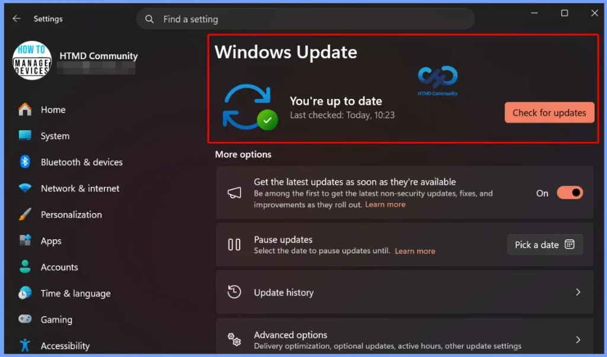
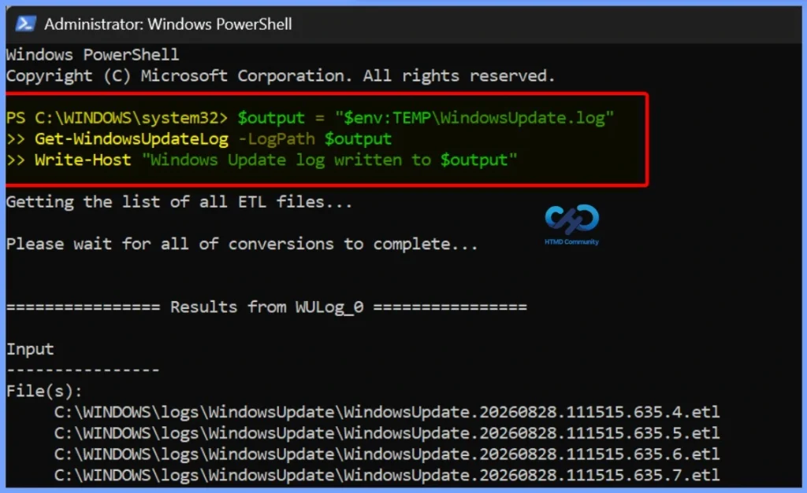
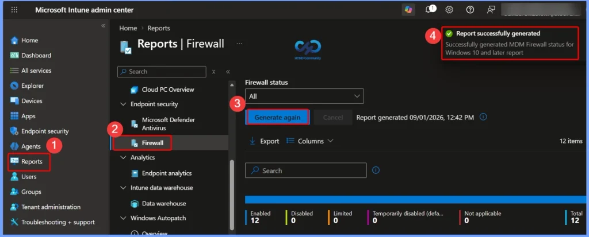

Key Takeaways
- Firewall, proxy, DNS, and VPN settings can directly affect Windows Update.
- Windows Update verifies the server certificate to ensure it is communicating with a genuine Microsoft service.
- Security devices that intercept and replace TLS certificates may prevent Windows Update from connecting successfully.
- Successful connectivity to one Microsoft endpoint does not guarantee that the complete Windows Update process will work.
- Error codes such as 0x8024402c, 0x80240438, 0x80245006, and 0x80240437 can indicate DNS, connectivity, or certificate-validation problems.
Fix Windows Update Connectivity Issues with Firewall and Proxy Settings! Windows Update needs to connect to several Microsoft services to check, download, and install updates. Firewall, proxy, DNS, VPN, or TLS inspection can block these connections and cause Windows Update to fail. When Windows Update is not working, check the Windows Update logs and error codes to find the problem. These errors can help identify whether the issue is with DNS, network access, firewall/proxy settings, or certificate checking.
Table of Content
Windows Update Not Working? Check Your Firewall and Proxy Settings
Windows Update connects to several Microsoft services over the internet. It also checks the server’s TLS certificate to make sure the connection is trusted and genuine. If a firewall or proxy uses TLS/SSL inspection, it may replace Microsoft’s certificate with its own. Windows Update may then reject the connection and fail to download updates.

Allow Windows Update through Firewall and Proxy
Make sure your firewall and proxy allow Windows Update traffic without TLS inspection. Allow the required Windows Update domains and their subdomains, such as *.update.microsoft.com. This includes domains like update.microsoft.com, sls.update.microsoft.com, and tas02.sls.update.microsoft.com. Using * helps allow Microsoft’s changing subdomains.
Generate the Windows Update log using PowerShell
If Windows Update is not working, generate the Windows Update log using PowerShell. Then check the log for common network-related errors.
$output = "$env:TEMP\WindowsUpdate.log"
Get-WindowsUpdateLog -LogPath $output
Write-Host "Windows Update log written to $output"
| Error | Details |
|---|---|
| 0x8024402c | Windows cannot resolve the Update server’s DNS name |
| 0x80240438 | Windows cannot connect to the Update server |
| 0x80245006 | The Update service returned an invalid response or TLS validation failed |
| 0x80240437 | Windows could not verify the Update server’s certificate |

Check VPN Settings for Windows Update
A VPN can sometimes block Windows Update by restricting update traffic, DNS lookups, or large downloads. If Windows Update works after disconnecting the VPN, check the VPN settings or contact your VPN provider to allow Windows Update connections.
Check WSUS and Network Configuration
If your organisation uses WSUS, Windows devices get updates from the company’s WSUS server instead of connecting directly to Microsoft Windows Update. Make sure the WSUS server, firewall, proxy, and TLS settings are correctly configured so devices can receive updates without issues.
Quick Checks for Windows Update Issues
When Windows Update is not working, check the following areas to find where the connection is being blocked:
- DNS Resolution: Make sure the device can resolve the required Microsoft Update domains.
- Firewall: Check whether the firewall is blocking Windows Update connections.
- Proxy: Make sure the proxy allows Windows Update traffic.
- TLS Inspection: Check whether the proxy or firewall is replacing Microsoft’s TLS certificate.
- VPN: Verify that the VPN is not blocking DNS or Windows Update traffic.
- Windows Update Logs: Review the logs and error codes to identify the cause of the issue.

Need Further Assistance or Have Technical Questions?
Join the LinkedIn Page and Telegram group to get the latest step-by-step guides and news updates. Join our Meetup Page to participate in User group meetings. Also, join the WhatsApp Community and the Whatsapp channel to get the latest news on Microsoft Technologies. We are there on Reddit as well.
Author
Anoop C Nair is Workplace Technology solution architect with 25+ years of experience in global enterprise organizations such as JP Morgan, Capgemini, etc. He is Microsoft Certified Trainer. Microsoft MVP from 2015 onwards for consecutive 11 years! He also conducts Intune and modern workplace tech training for enterprise organizations. He is Blogger, Speaker, and Founder of HTMD Community and HTMD Conference. His focus is on Device Management technologies such as Intune, Windows, Cloud PC. He writes about technologies like Intune, SCCM, Windows, Cloud PC, Windows, Entra, Microsoft Security.